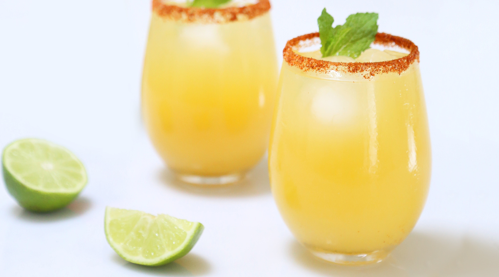

These fizzy and tart margaritas use kombucha for a modern twist! I normally use citrus-flavored kombucha (such as GT's Synergy California Citrus), but experiment with different flavors - you can't go wrong!
Fill a cocktail shaker half-full with ice. Add tequila, triple sec, and lime juice to the shaker. Seal and shake vigorously until outside is frosted, 10 to 15 seconds.
Sprinkle salt onto a plate. Moisten the rim of a glass with the lime wedge. Press the moistened rim into the salt. Fill glass with ice.
Strain margarita into the glass and top with kombucha. Stir gently and garnish with lime wedge, if desired.